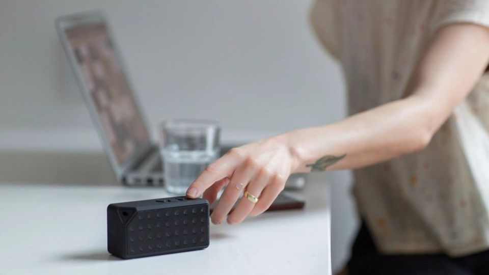

Séisme : les bons réflexes pendant et après la secousse
Un séisme survient sans prévenir. Pendant la secousse, protégez-vous sur place : baissez-vous, abritez-vous sous un meuble solide ou contre un mur porteur et tenez-vous. Après la secousse, évacuez calmement à l'extérieur sans utiliser l'ascenseur et éloignez-vous des bâtiments et du littoral en zone exposée au tsunami.

Informations pratiques, sources officielles (Géorisques, info.gouv.fr, BRGM, SGDSN (Guide Tous responsables, 20/11/2025)). Elles ne remplacent pas les consignes des autorités. En cas d'urgence, appelez le 112 et suivez les consignes de la préfecture, de la radio et de FR-Alert.
L'essentiel
- Pendant la secousse, abritez-vous sous un meuble solide ou contre un mur porteur.
- Protégez votre tête et votre nuque avec vos bras.
- Après la secousse, évacuez calmement par les escaliers.
- Près du littoral, si la secousse a été forte ou longue, éloignez-vous immédiatement du rivage et gagnez à pied un point haut, sans attendre d'autres signes.
Pendant la secousse : se protéger immédiatement
Les premières secondes sont décisives. Évitez de courir vers les escaliers ou les sorties pendant que le sol tremble, car la chute d'objets ou de matériaux cause la majorité des blessures.
À l'intérieur
- Éloignez-vous des fenêtres, vitres et meubles hauts
- Abritez-vous sous une table solide ou contre un mur porteur et protégez votre tête
À l'extérieur
- Écartez-vous des façades, balcons, arbres, poteaux et lignes électriques
- Accroupissez-vous au sol en protégeant votre tête et votre nuque
En voiture
- Arrêtez-vous à l'écart des ponts, tunnels, bâtiments et câbles
- Restez à l'intérieur avec votre ceinture jusqu'à la fin de la secousse
Après la secousse : évacuer et prévenir les risques
Dès l'arrêt des secousses, préparez-vous à d'éventuelles répliques et sécurisez votre départ du bâtiment.
- Coupez le gaz et l'électricité si vous pouvez le faire sans danger, et n'utilisez ni flamme ni briquet ni allumette en raison du risque de fuite de gaz.
- Une fois la secousse terminée, évacuez calmement par les escaliers sans prendre l'ascenseur, emportez votre kit d'urgence 72 h si cela est possible et éloignez-vous des bâtiments.
- Libérez les réseaux et écoutez les consignes : n'appelez qu'en cas d'urgence vitale, écoutez la radio à piles et suivez les messages officiels.
Zones sismiques en France et vigilance aux Antilles
Le zonage sismique de la France classe le territoire en cinq niveaux de sismicité : 1 (très faible), 2 (faible), 3 (modérée), 4 (moyenne) et 5 (forte). En métropole, les zones les plus concernées se situent notamment dans les Pyrénées, les Alpes, le fossé rhénan et l'ouest du pays.
- Sismicité forte aux Antilles : la Guadeloupe et la Martinique sont en zone de sismicité 5 (forte), avec un risque de tsunami en cas de séisme important en mer ou à proximité du littoral.
- Réflexe tsunami sur le littoral : après une forte secousse ressentie près de la mer, rejoignez immédiatement les hauteurs à pied sans attendre une sirène.
- Vérifier son exposition : consultez Géorisques et préparez votre plan familial de mise en sûreté.
Questions fréquentes
Faut-il sortir immédiatement d'un immeuble pendant un séisme ?
Non. Pendant la secousse, restez à l'intérieur loin des vitres et abritez-vous sous un meuble solide ou contre un mur porteur. Évacuez par les escaliers uniquement une fois la secousse terminée.
Pourquoi ne faut-il pas utiliser de bougie ni d'allumette après un séisme ?
Un séisme peut endommager les canalisations de gaz. Une flamme ou une étincelle électrique risque de provoquer une explosion : utilisez uniquement une lampe de poche.
Quelles sont les régions françaises les plus exposées aux séismes ?
Les Antilles (Guadeloupe et Martinique) présentent l'aléa sismique le plus élevé (zone 5). En métropole, les zones les plus exposées concernent notamment les Alpes, les Pyrénées, l'Alsace et une partie de l'Ouest.
Que faire aux Antilles ou sur la côte après une forte secousse ?
Si vous ressentez une secousse importante près du littoral, gagnez immédiatement un point haut à pied à l'intérieur des terres par précaution face au risque de tsunami.
À lire aussi

 Plan familial de mise en sûretéOrganiser son plan familial de mise en sûreté : qui fait quoi, point de rendez-vous, contacts utiles et articulation avec le kit d'urgence 72 h.
Plan familial de mise en sûretéOrganiser son plan familial de mise en sûreté : qui fait quoi, point de rendez-vous, contacts utiles et articulation avec le kit d'urgence 72 h. Kit de survie 72 h : la listeListe complète du kit d’urgence 72h du gouvernement : eau, nourriture, radio, trousse… Version claire + checklist interactive gratuite adaptée à votre foyer.
Kit de survie 72 h : la listeListe complète du kit d’urgence 72h du gouvernement : eau, nourriture, radio, trousse… Version claire + checklist interactive gratuite adaptée à votre foyer.